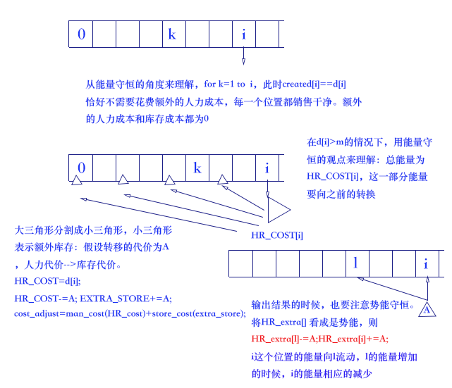
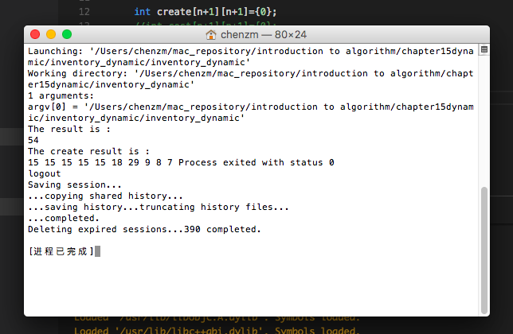

Rinky Dink公司是一家制造溜冰场冰面修整设备的公司。这种设备每个月的需求量都在变化，因此公司希望设计一种策略来规划生产，需求是给定的，即它虽然是波动的，但是是可预测的。公司希望设计接下来的n个月的生产计划。
对第i个月，公司知道需求di，即该月能够销售出去的设备的总量。令D=∑i=1ndi
为后n个月的总需求。公司雇佣的全职员工，可以提供一个月制造m台设备的劳动力。如果公司希望一个月内制造多于m台的设备，可以雇佣额外的兼职劳动力，雇佣的成本为每制造一台机器付出c美元。而且，如果在月末还有设备未售出，公司将付出库存成本。
保存j台设备的成本可以描述为一个函数h(j)，j=1,2,⋯,D，其中对所有的1≤j≤D，h(j)≥0，对1≤j≤D−1，h(j)≤h(j+1)。
设计库存规划算法。
能量守恒的观点分析
库存规划的问题，可以用物理学中的能量守恒的观点进行分析
store cost+HR cost=total value
其中，total value表示总能量，总能量在store cost和HR cost中能够相互转换。
算法分析：

inventory_dynamic.h
1
2
3
4
5
6
7
8
9
10
11
12
13
14
15
16
17
18
19
20
21
22
23
24
25
26
27
28
29
30
31
32
33
34
35
36
37
38
39
40
41
42
43
44
45
46
47
48
49
50
51
52
53
54
55
56
57
58
59
60
61
62
63
64
65
66
67
68
69
70
71
72
73
74
75
76
77
78
79
80
81
82
83
84
85
86
87
88
89
90
91
92
93
94
95
96
97
98
99
100
101
102
103
104
105
106
107
108
109
110
111
112
113
114
115
116
117
118
119
120
121
122
123
124
125
126
127
128
129
130
131
132
|
using namespace std;
void find_create(int *extra_create,int *create_result,int *d)
{
for(int i=0;i<=n;i++)
create_result[i]=extra_create[i]+d[i];
}
int min_val(int a ,int b)
{
return a<b?a:b;
}
int man_cost(int man_num)
{
if(man_num<=m)
return 0;
else
return c*(man_num-m);
}
int store_cost(int store_num)
{
if(store_num>0)
return (int)log((double)store_num);
else
return 0;
}
int create_material(int d[],int create[][n+1],int start,int end)
//start从0开始
{
if(start==end)
{
create[start][end]=0;
}
if(end==start+1)
{
create[start][end]=d[end];
}
if(end>start)
{
create[start][end]=create_material(d,create,start,end-1)+d[end];
//实现结果 d[start+1]+d[start+2]+.....+d[end]
}
else
{
return 0;
}
return create[start][end];
}
void init_create(int create[][n+1],int d[])
{
for(int i=0;i<n;i++)
create_material(d,create,i,n);
}
int min_cost(int d[],int HR_extra[],int start,int end)
{
if(start>=end)
return 0;
int cost=0; //最初cost[]值为0，一开始每一个位置所保存的create[]就是当前需求值
for(int i=start;i<=end;i++)
{
if(d[i]<=m)
{
//此时不需要花费额外的人力成本，所有的create[i]==d[i]均会销售出去
cost+=0; //不需要花费任何代价，月末就可以出售完毕，没有库存
HR_extra[i]=m-d[i];
}
else
{
HR_extra[i]=m-d[i];
int HR_cost=d[i]; //人力资源成本超出预算，这部分预算可以考虑转换成库存成本
int HR_cost_copy=d[i]; //副本，用来输出
int cost_original=man_cost(HR_cost);
int extra_store=0; //额外付出的库存代价
//注意判断cost_original和cost_adjust哪个大？哪个小？
for(int l=start;l<i;l++) //(l,i)
{
int cur_extra=HR_extra[l];
if(cur_extra>0 && HR_cost!=0) //这部分人力资源成本可以用来存放库存，转换成库存成本
{
int temp_excess=min_val(cur_extra,HR_cost);
//势能守恒来求解
HR_cost-=temp_excess;
extra_store+=temp_excess;
}
}
int cost_adjust=man_cost(HR_cost)+store_cost(extra_store);
if(cost_adjust<cost_original)
{
cost+=cost_adjust;
//HR_extra也要调整
for(int l=start;l<i;l++)
{
if(HR_extra[l]>0 && HR_cost_copy!=0)
{
int temp_excess_copy=min_val(HR_extra[l],HR_cost_copy);
HR_cost_copy-=temp_excess_copy;
//保持势能守恒
HR_extra[l]-=temp_excess_copy;
HR_extra[i]+=temp_excess_copy;
}
}
}
else
{
cost+=cost_original;
}
}
}
return cost;
}
|
inventory_dynamic.cpp
1
2
3
4
5
6
7
8
9
10
11
12
13
14
15
16
17
18
19
20
21
22
23
24
25
26
27
28
29
|
int main()
{
int result_cost,original_create;
int d[n+1]={0,10,11,13,14,20,25,29,9,8,7}; //146
int HR_extra[n+1]={0};
int result[n+1]={0};
int create[n+1][n+1]={0};
//int cost[n+1][n+1]={0};
original_create=create_material(d,create,0,n);
init_create(create,d);
result_cost=min_cost(d,HR_extra,1,n);
cout<<"The result is :"<<endl;
cout<<result_cost<<endl;
cout<<"The create result is :"<<endl;
for(int i=1;i<=n;i++)
{
cout<<m-HR_extra[i]<<" ";
}
}
|
算法运行结果

 微信
微信 支付宝
支付宝